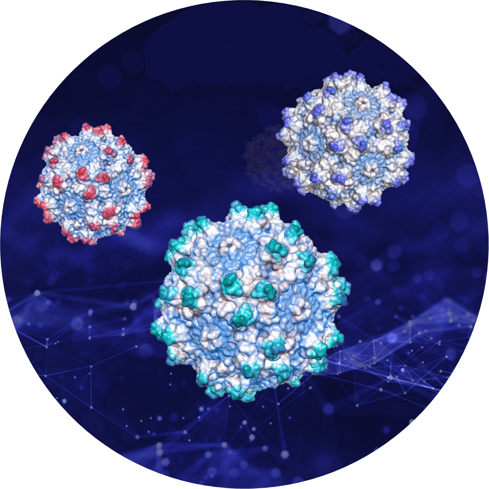

2022
Founded
Launched with a $67M Series A from Deerfield, on technologies from the Broad Institute and Harvard.
About us
Apertura develops genetic medicines by engineering AAV capsids and payloads to overcome the limitations that keep gene therapy from reaching the diseases and patients that need it.
Mission
We engineer next-generation gene therapies for unaddressed genetic diseases, using machine learning-powered delivery and expression platforms.
Our capsid engineering work started from a simple constraint: a therapy that cannot reach the tissue cannot treat the disease. TfR1 CapX is the answer we built for the central nervous system, and it is already carrying programs in tuberous sclerosis complex, prion disease, Rett syndrome, Angelman syndrome, Friedreich ataxia and more.

How we work
We are committed to growing the field, and we believe the impact is largest when corporate and academic collaborators, patients and disease foundations work the problem together. That belief is why the capsid is licensed widely, and why academic labs can get it at no cost.
2022
Launched with a $67M Series A from Deerfield, on technologies from the Broad Institute and Harvard.
2024
Science publishes the first AAV capsid reprogrammed to bind human TfR1 for brain-wide gene delivery.
2026
Open Aperture launches, licenses multiply, and TfR1 CapX approaches its first clinical programs.
Where we are
We were founded on innovative technologies from the Broad Institute and Harvard University, with support from Deerfield Management Company. Our headquarters are in the Cure. building, Deerfield's innovation campus, in the life sciences hub of New York City.
Cure.
345 Park Ave South, Floor 2
New York, NY 10010